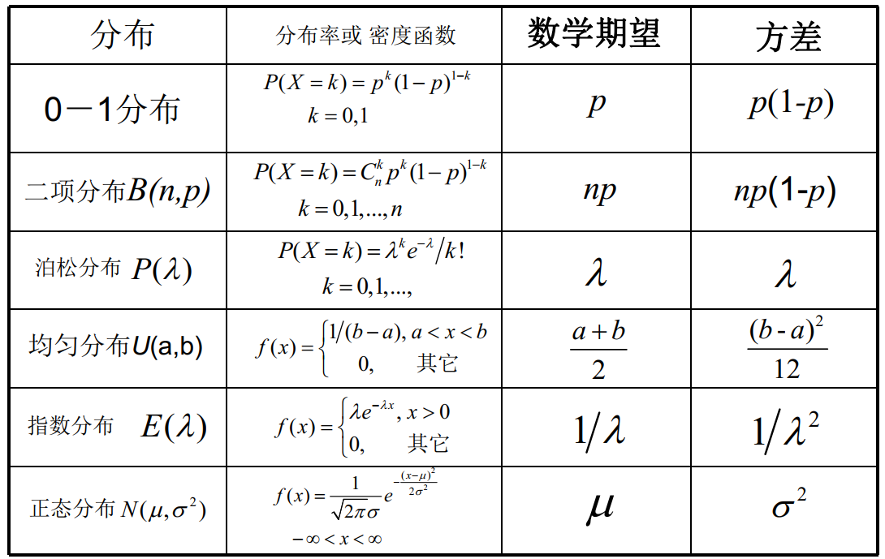

Chapter 4 随机变量的数字特征¶
约 2400 个字 预计阅读时间 12 分钟
数学期望¶
离散型随机变量的数学期望¶
设离散随机变量 \(X\) 的概率分布率为 \(P\{X=x_i\}=p_i,\;\;i=1,2,...\)，若级数\(\sum_{i=1}^{+\infty}=|x_i|p_i<+\infty\)（绝对收敛），则称级数\(\sum_{i=1}^{+\infty}x_ip_i\)为\(X\)的数学期望（Mathematical Expectation）或均值（Mean），简称为期望，记 \(E(X)=\sum_{i=1}^{+\infty}x_ip_i\)。
如果 \(\sum_{i=1}^{+\infty}=|x_i|p_i=+\infty\) 则称随机变量 \(X\) 的数学期望不存在。
0-1分布的数学期望¶
设随机变量 \(X\) 服从 0-1 分布 \(B(1,p)\;(0<p<1)\)，则：
二项分布的数学期望¶
设随机变量 \(X\) 服从二项分布 \(B(n,p)\;(n\in \mathbb{N}^*,\;0<p<1)\)，则：
或者，我们引入随机变量 \(X_i=\begin{cases}1,&\text{第}i\text{次试验成功}\\0,&\text{第}i\text{次试验失败}\end{cases}\)，则 \(X=\sum_{i=1}^{n}X_i\)，且 \(X_i\) 相互独立，且 \(X_i\sim B(1,p)\)，则：
泊松分布的数学期望¶
设随机变量\(X\)服从泊松分布\(P(\lambda)\;(\lambda>0)\)，则：
由此式可知，已知泊松分布的数学期望可以确定泊松分布。
连续型随机变量的数学期望¶
设连续随机变量\(X\)的密度函数为\(f(x)\)，若\(\int^{+\infty}_{-\infty}|x|f(x)\mathrm{d} x<+\infty\)，则称积分\(\int^{+\infty}_{-\infty}xf(x)\mathrm{d} x\)为\(X\)的数学期望或均值，简称为期望，记\(E(X)=\int^{+\infty}_{-\infty}xf(x)\mathrm{d} x\)。
如果\(\int^{+\infty}_{-\infty}|x|f(x)\mathrm{d} x=+\infty\)则称随机变量\(X\)的数学期望不存在。
均匀分布的数学期望¶
设随机变量\(X\)服从均匀分布\(U(a,b)\;(a<b)\)，则：
指数分布的数学期望¶
设随机变量\(X\)服从指数分布\(E(\lambda)\;(\lambda>0)\)，则：
由此式可知，已知指数分布的数学期望可以确定指数分布。
标准正态分布的数学期望¶
设随机变量\(X\)服从标准正态分布\(N(0,1)\)，注意到其密度函数：\(\varphi(x)=\frac{1}{\sqrt{2\pi}}e^{-x^2/2},\;x\in \mathbb{R}\)为偶函数，那么\(x\varphi(x)\)是奇函数，所以\(E(x)=0\)
正态分布的数学期望¶
设随机变量\(X\)服从正态分布\(N(\mu,\sigma^2)\;(\sigma>0)\)，则：
随机变量函数的数学期望¶
对于随机变量函数，在保证期望存在的情况下，只需要将定义中\(x_i\)换为\(g(x_i)\)即可，但我们不需要计算 \(g(x_i)\) 的概率分布率：
离散型： \(Z = g(X)\)，则 \(E(Z) = E[g(X)] = \sum_{i=1}^{+\infty}g(x_i)p_i\)
连续型： \(Z = g(X)\)，则 \(E(Z) = E[g(X)] = \int g(x)f(x)\mathrm{d}x\)
这里的 \(p_{ij}\) 和 \(f(x,y)\) 都是 \(X,Y\) 本来的联合分布率，而不是 \(Z\) 的联合分布率。
二元离散型： \(Z = h(X,Y)\)，则 \(E(Z) = E[h(X,Y)] = \sum\limits_{i=1}^{+\infty}\sum\limits_{j=1}^{+\infty}h(x_i,y_j)p_{ij}\)
二元连续型： \(Z = h(X,Y)\)，则 \(E(Z) = E[h(X,Y)] = \int_{-\infty}^{\infty} \int_{-\infty}^{\infty} h(x,y)f(x,y)\mathrm{d}x\mathrm{d}y\)
这里的 \(p_{ij}\) 和 \(f(x,y)\) 都是 \(X,Y\) 本来的联合分布率，而不是 \(Z\) 的联合分布率。
数学期望的性质¶
除了使用定义计算，还有一些性质可以简化计算。
1.若\(C\)是常数，则\(E(C) = C\)； 2.设\(X\)是随机变量，\(C\)是常数，则\(E(C\cdot X)=C\cdot E(X)\)； 3.设\(X,Y\)是两个随机变量，则\(E(X+Y)=E(X)+E(Y)\)； - 这一性质可以推广到任意有限个随机变量线性组合的情况：\(E(\sum^n_i{c_i\cdot X_i})=\sum^n_i c_i\cdot E(X_i)\)；
上述三条合并起来就是\(E(aX+bY+c)=aE(X)+bE(Y)+c\)；
4.设\(X,Y\)是相互独立的随机变量，则\(E(X\cdot Y)=E(X)\cdot E(Y)\)，但逆命题不成立；
这一性质可以推广到任意有限个独立的随机变量：
方差¶
设\(X\)为随机变量，若\(E\{[X-E(X)]^2\}\)存在，则称其为\(X\)的方差，记作\(Var(X)\)或\(D(X)\)，即
记 \(\sigma(X)=\sqrt{(Var(X))}\) 为\(X\)的标准差或均方差。
- 数学期望存在是方差存在的必要但不充分存在。
方差刻画了\(X\)取值的分散程度：
- 若\(X\)取值集中，则\(Var(X)\)较小；
- 若\(X\)取值分散，则\(Var(X)\)较大；
而其计算方法可以随机变量函数的数学期望，记 \(g(X)=(X-E(X))^2\) ，然后计算 \(E(g(X))\) 。具体的，有：
- 离散型：\(Var(X)=E\{[X-E(X)]^2\}=\sum\limits_{i=1}^{\infty}[x_i-E(X)]^2p_i\)；
- 连续型：\(Var(X)=E\{[X-E(X)]^2\}=\int_{-\infty}^{+\infty}[x-E(X)]^2f(x)\mathrm dx\)；
- 利用期望的性质，可以得到\(Var(X)=E(X^2)-E^2(X)\)；
方差的性质¶
- 若 \(C\) 是常数，则 \(Var(C) = 0\) ；
- 设 \(X\) 是随机变量， \(C\) 是常数，则 \(Var(C\cdot X)=C^2\cdot Var(X)\) ；
- 设 \(X,Y\) 是两个随机变量，则
-
特别的，如果\(X,Y\)相互独立，则
\[Var(X\pm Y)=Var(X)+Var(Y)\] -
进一步的，如果\(X_i\;(i=1,2,...,n)\)彼此独立，则
-
综合上述三条，若 \(X,Y\)独立，则有\(Var(aX+bY+c)=a^2Var(X)+b^2Var(Y)\)；
-
\(Var(X)\leq E((X-c)^2)\)，并且当且仅当\(E(X)=c\)时等号成立；
- \(Var(X)=0 \Leftrightarrow P(X=c)=1 \;\;\;\text{and}\;\;\;c=E(X)\)；
常见随机变量的方差¶
均匀分布的方差¶
设随机变量\(X\)服从均匀分布\(U(a,b)\;(a<b)\)，则：
0-1分布的方差¶
设随机变量\(X\)服从0-1分布\(B(1,p)\;(0<p<1)\)，则：
二项分布的方差¶
设随机变量\(X\)服从二项分布\(B(n,p)\;(n\in \mathbb{N}^*,\;0<p<1)\)，
引入随机变量 \(X_i=\begin{cases}1,&\text{第}i\text{次试验成功}\\0,&\text{第}i\text{次试验失败}\end{cases}\)，则 \(X=\sum_{i=1}^{n}X_i\)，且 \(X_i\) 相互独立，且 \(X_i\sim B(1,p)\)，则：
泊松分布的方差¶
设随机变量\(X\)服从泊松分布\(P(\lambda)\;(\lambda>0)\)，则：
指数分布的方差¶
设随机变量\(X\)服从指数分布\(E(\lambda)\;(\lambda>0)\)，则：
标准正态分布的方差¶
设随机变量\(X\)服从标准正态分布\(N(0,1)\)，因为 \(E(X)=0\)，所以：
正态分布的方差¶
设随机变量\(X\)服从正态分布\(N(\mu,\sigma^2)\;(\sigma>0)\)，则：
常见随机变量的数字特征¶

标准化变量¶
设随机变量\(X\)的数学期望\(E(X)=\mu\)，方差\(Var(X)=\sigma^2\neq 0\)
中心化：使随机变量\(X\)的数学期望为\(0\)，则称随机变量\(X-\mu\)为\(X\)的中心化变量。
标准化：使随机变量\(X\)的数学期望为\(0\)，方差为\(1\)，则称随机变量\(\frac{X-\mu}{\sigma}\)为\(X\)的标准化变量。
- 标准化变量的数学期望为\(E(X^*)=0\)，方差为\(Var(X^*)=1\)。
变异系数¶
变异系数(Coefficient of Variation)又叫“标准差率”，是衡量资料中各观测值变异程度的一个数字特征。它可以消除单位或平均数不同对两个或多个资料变异程度比较的影响。
设随机变量 \(X\) 具有数学期望 \(E(X)=\mu\)，方差 \(Var(X)={\sigma}^2 \neq 0\)，则称 \(C_v = \frac{\sigma}{\mu}\) 为 \(X\) 的变异系数。
协方差与相关系数¶
随机变量\(X,Y\)的协方差：
实际上就是把\(X,Y\)都中心化后的期望成绩
方差性质补充
协方差的性质¶
- \(Cov(X,X)=Var(X)\)；
- \(Cov(X,Y)=Cov(Y,X)\)；
- . \(Cov(aX,bY)=abCov(X,Y)\;,\;\;a,b\in\mathbb{R}\)；
-
. \(Cov(X+Y,Z)=Cov(X,Z)+Cov(Y,Z)\)；
协方差具有线性性。
- \(Cov(X,Y)=E(XY)-E(X)E(Y)\)；
- \(Cov(aX+bY,cX+dY)=acVar(X)+bdVar(Y)+(ad+bc)Cov(X,Y)\)；
- 当 \(Var(X)Var(Y)\neq 0\) 时，有 \(Cov(X,Y)^2\leq Var(X)Var(Y)\)，其中等号当且仅当 \(X,Y\) 之间有严格的线性关系，即存在常数 \(a,b\) ，使 \(P(Y=a+bx)=1\) ；
- \(Cov(c,Y)=E(cY)-E(c)E(Y)=0\;,\;\;c\in\mathbb{R}\)；
- \(Cov(X+Y,X-Y)=Cov(X,X)-Cov(Y,Y)=Var(X)-Var(Y)\)；
- \(D(aX+bY)=a^2Var(X)+b^2Var(Y)+2abCov(X,Y)\)；
相关系数的性质¶
随机变量 \(X,Y\) 的相关系数 $\rho {}=\frac{Cov(X,Y)}{\sqrt{Var(X)Var(Y)}}=Cov(\frac{X-E(X)}{\sqrt{Var(X)}},\frac{Y-E(Y)}{\sqrt{Var(Y)}})= Cov(X*,Y*) $，其中 \(X^*,Y^*\) 分别为 \(X,Y\) 的标准化变量。
- \(|\rho_{_{XY}}|\leq 1\)；
- \(|\rho_{_{XY}}|=1 \;\; \Leftrightarrow \;\; \exists a,b\in \R,\;使得\;P(Y=a+bX)=1\)；
- \(\rho_{_{XY}}=+1\)时，\(b>0\)；
- \(\rho_{_{XY}}=-1\)时，\(b<0\)；
- 上述两条性质可以合并写成：
当 \(Var(X)Var(Y)\neq 0\) 时，有 \(Cov^2(X,Y)\leq Var(X)Var(Y)\)，其中等号当且仅当 \(X\) 与 \(Y\) 之间有严格的线性关系，即存在常数 \(a,b\)，使 \(P(Y=a+bX)=1\)；
相关系数 \(\rho_{_{XY}}\) 是用来表征 \(X,Y\) 之间线性关系紧密程度的量。此外，考虑以 \(X\) 的线性函数 \(a+bX\) 来近似表示 \(Y\)，均方误差 \(e(a,b)=E\{ [Y-(a+bX)]^2 \}\) 也可以用来衡量 \(X,Y\) 之间线性关系紧密程度。
最佳近似值
由两个偏导数为 \(0\) 可得最佳近似值：
于是有：
- \(|\rho_{_{XY}}|\)比较大时，误差较小，表示\(X,Y\)线性关系的程度好；
- \(|\rho_{_{XY}}|=1\)时，误差为\(0\)，表示\(X,Y\)之间以概率\(1\)存在线性关系；
- \(|\rho_{_{XY}}|\)比较小时，误差较大，表明\(X,Y\)线性关系的程度差；
- \(\rho_{_{XY}}>0\)时，\(X,Y\) 正相关；
- \(\rho_{_{XY}}<0\)时，\(X,Y\) 负相关；
-
\(\rho_{_{XY}}=0\)时，称\(X,Y\)不相关或零相关（仅仅对于线性关系来说，与独立的含义不同）；
\(\rho_{_{XY}}=0\) 时： 1. \(Cov(X,Y)=0\)； 2. \(E(XY)=E(X)E(Y)\)； 3. \(Var(X\pm Y)=Var(X)+Var(Y)\)；
于是有结论：
\[X,Y\text{互相独立} \;\; \Rightarrow \;\; X,Y\text{不相关}\\ X,Y\text{不独立}\;\;\Leftarrow \;\;X,Y\text{相关}\]但是反过来不成立，即 \(X,Y\) 不相关不一定独立。
二维正态分布各参数的含义¶
参数 \(\mu_1,\mu_2\) 分别表示 \(X,Y\) 的数学期望，\(\sigma_1^2,\sigma_2^2\) 分别表示 \(X,Y\) 的方差，\(\rho\) 表示 \(X,Y\) 的相关系数。
当 \(\rho=0\) 时，称 \(X,Y\) 不相关，而此时可推出 \(X,Y\) 独立。因此对于二维正态分布，\(X,Y\) 独立与不相关是等价的。
其他数字特征¶
矩¶
设 \(X\), \(Y\) 是随机变量，\(k\), \(l\) 是正整数，若以下期望存在，则称它们为 \(X\), \(Y\) 的 \(k\) 阶原点矩和 \(k\) 阶中心矩：
- \(X\) 的 \(k\) 阶原点矩：\(E(X^k)\)；
- \(1\) 阶原点矩为数学期望；
- \(X\) 的 \(k\) 阶中心矩：\(E\{[X-E(X)]^k\}\)；
- \(1\) 阶中心矩为 \(0\)；
- \(2\) 阶中心矩为方差；
- \(X\), \(Y\) 的 \(k+l\) 阶混合（原点）矩：\(E(X^kY^l)\)；
- \(X\), \(Y\) 的 \(k+l\) 阶混合中心矩：\(E\{[X-E(X)]^k[Y-E(Y)]^l\}\)；
分位数¶
\(X\) 为连续型随机变量， 其分布函数和概率密度函数分别为 \(F(x)\) 和 \(f(x)\) 称满足条件
的 \(x_{\alpha}\) 为 \(X\) 的 \(\alpha\) 分位数。
- \(x_{1/2}\) 称为 \(X\) 的中位数；
- \(x_{1/4}\) 称为 \(X\) 的上 \(\frac{1}{4}\) 分位数；
- \(x_{3/4}\) 称为 \(X\) 的上 \(\frac{3}{4}\) 分位数；
多元随机变量的数字特征¶
设\(n\)元随机变量\(X=(X_1,X_2,...,X_n)^T\)，若每一个分量的数学期望都存在，则称\(E(X)=(E(X_1),E(X_2),...,E(X_n))^T\)为 \(n\)元随机变量\(X\)的数学期望（向量）。
设\(n\)维随机变量\(\vec{X}=(X_1,X_2,...,X_n)^T\)，\(Cov(X_i,X_j)\;\;(i,j=1,2,...,n)\)都存在，则：
称之为\(\vec{X}\)的协方差矩阵。它是一个对称的非负定矩阵。
\(n\) 维正态变量重要性质¶
-
\(n\) 维正态变量 \((X_1,X_2,...,X_n)^T\) 中的任意子向量 \((X_{i_1},X_{i_2},...,X_{i_k})^T\)，\(1\leq k\leq n\) 也服从 \(k\) 元正态分布；
- 特别地，每一个分量 \(X_i,i=1,2,...,n\) 都是正态变量；
联合正态可以推出边际正态，但边际正态不一定能推出联合正态。
如函数 \(f(x,y)=\frac{1}{2\pi}e^{-\frac{1}{2}(x^2+y^2)}(1+\sin x\sin y)\)，边际分布都是标准正态分布，但是联合分布不是正态分布。
我们需要加条件。
- 反之，若每个 \(X_i\) 都是正态变量，且相互独立，则 \((X_1,X_2,...,X_n)\) 是 \(n\) 维正态变量；
- \(n\) 维随机变量 \((X_1,X_2,...,X_n)\) 服从 \(n\) 维正态分布的充要条件是 \(X_1,X_2,...,X_n\) 的任意线性组合 \(\sum_{i}^{n} l_iX_i\) 服从一维正态分布，其中 \(l_1,l_2,...,l_n\) 不全为 \(0\)；
- 若 \((X_1,X_2,...,X_n)\) 服从 \(n\) 维正态分布，设 \(Y_1,Y_2,...,Y_k\) 是 \(X_i\) 的线型函数，则 \((Y_1,Y_2,...,Y_k)\) 也服从多维正态分布，这一性质被称为正态变量的线性变换不变性；
- 若 \((X_1,X_2,...,X_n)\) 服从 \(n\)维正态分布，则 \(X_1,X_2,...,X_n\) 互相独立的充要条件是 \(X_i\) 两两不相关，也等价于协方差矩阵为对角矩阵；